General Relativity¶
Description of Space-time Manifold¶
How to describe space-time manifold?
- Metric (with a set of local coordinates), connection (Christoffel symbols).
- Metric (in the form of tetrads), connection (Ricci rotation coefficients).
- 1+3 covariantly defined variables.
Description of Space-time Manifold - Coordinates¶
Description of Space-time Manifold - Tetrads¶
Description of Space-time Manifold - 1+3 Covariant Description¶
Physics in description is easier to understand.
Definations¶
Definations of some physical quantities and operators are listed below.
Here we have
- geometrical variables: Volume
- Kinematical variables: Velocity, Expansion rate, Shear rate
- Thermaldynanmical variables: Energy density, Momentum density, Pressure, Equation of state
Volume¶
To calculate volume, the volume element should be defined first in order to integrate. Before that, orientation on manifolds is to be figured out.
On an oriented manifold with metric, the defined volume element (a n-form) should be compatible with the orientation and also determined by the metric. [1]
Introducing those requirements, a compatible volume element is
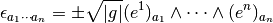
Alternatively, this can be expressed in the way Ellis used in arXiv:gr-qc/9812046v5.
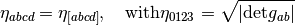
Induced volume element 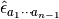 is defined use the normal vector  of the hypersurface,
of the hypersurface,
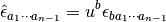
| [1] | For more information, check out Canbin Liang’s book. Volume 1, page 115. |
4-velocity¶
4-velocity of observed matter is

with  ,
,  is the proper time along the worldlines of investaged matter.
is the proper time along the worldlines of investaged matter.
Projection Tensors¶
We can use 4-velocity to project variables to parts that is parallel to  and parts that is orthogonal to .
and parts that is orthogonal to .

Some properties of the two projections.
![& U^a_{\phantom a b} U^b_{\phantom bc} = U^a_{\phantom a c} , U^a_{\phantom a a} = 1 , U_{ab}=g_{ac} U^c_{\phantom cb} , U_{ab} u^b = - g_{ac} u^c u_b u^b = u_a \\
& h^a_{\phantom ab} = g^{ac} h_{cb} = \delta^a_{\phantom ab} + u^a u_b = \delta^a_{\phantom ab} - U^a_{\phantom ab} \\
& h^a_{\phantom a c}h^c_{\phantom c b} = (\delta^a_{\phantom ac} - U^a_{\phantom ac})(\delta^c_{\phantom cb} - U^c_{\phantom cb}) = \delta^a_{\phantom ab} - U^a_{\phantom ab} = h^a_{\phantom ab} \\
& h^a_{\phantom aa} = 4-1 = 3 , h_{ab}u^b = 0](../_images/math/a1a9402e42eefcaac76a1872e639283691c23f88.png)
Covariant time derivative ( )¶
)¶
This is the derivative along the fundamental worldlines (projection on the worldlines),
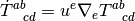
Fully orthogonally projected covariant derivative ( )¶
)¶
This derivative is the project orghogonal to the normal vector of the hyperspace or orthogonal to the observer’s 4-velocity or along the tagent of the hyperspace.
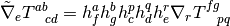
Orthogonal projections of vectors¶
Orthogonal projection of vectors

And the orthogonally projected symmetric trace-free part of tensors
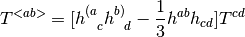
Othogonal projected covariant time derivatives along ¶
![\dot v^{<a>} = h^a_{\phantom a b} \dot v^b
\dot T^{<ab>} = [ h^{(a}_{\phantom{(a}b} h^{b)}_{\phantom{b)} d} - \frac 1 3 h^{ab}h_{cd} ]\dot T^{cd}](../_images/math/560635d393d1d088e984a35369ccf1dffc2a11e5.png)
Properties¶
- Projected time and space derivatives of
 , 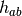 and
, 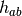 and  vanish.
vanish.
Fields and Particles¶
Energy-Momentum Tensor for Particles¶

in which  is the trajectory of the particle. Then the energy density
is the trajectory of the particle. Then the energy density  corresponds to
corresponds to  .
.
The Largrange density

Energy-momentum density is  is
is
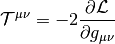
Finally,
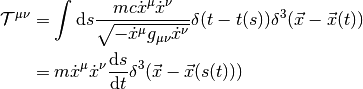
Theorems¶
Killing Vector Related¶
 is Killing vector field,
is Killing vector field,  is the tangent vector of geodesic line. Then 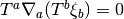, that is
is the tangent vector of geodesic line. Then 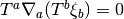, that is  is a constant on geodesics.
is a constant on geodesics.
Specific Topics¶
Redshift¶
In geometrical optics limit, the angular frequency  of a photon with a 4-vector
of a photon with a 4-vector  , measured by a observer with a 4-velocity 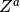, is
, measured by a observer with a 4-velocity 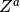, is  .
.
Stationary vs Static¶
Stationay¶
“A stationary spacetime admits a timelike Killing vector field. That a stationary spacetime is one in which you can find a family of observers who observe no changes in the gravitational field (or sources such as matter or electromagnetic fields) over time.”
When we say a field is stationary, we only mean the field is time-independent.
Static¶
“A static spacetime is a stationary spacetime in which the timelike Killing vector field has vanishing vorticity, or equivalently (by the Frobenius theorem) is hypersurface orthogonal. A static spacetime is one which admits a slicing into spacelike hypersurfaces which are everywhere orthogonal to the world lines of our ‘bored observers’”
When we say a field is static, the field is both time-independent and symmetric in a time reversal process.